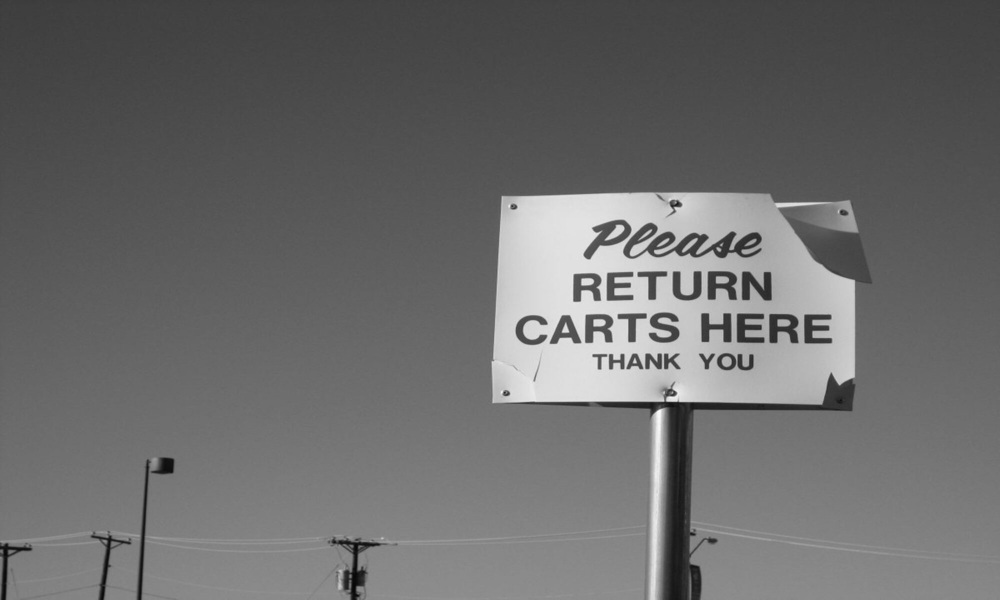
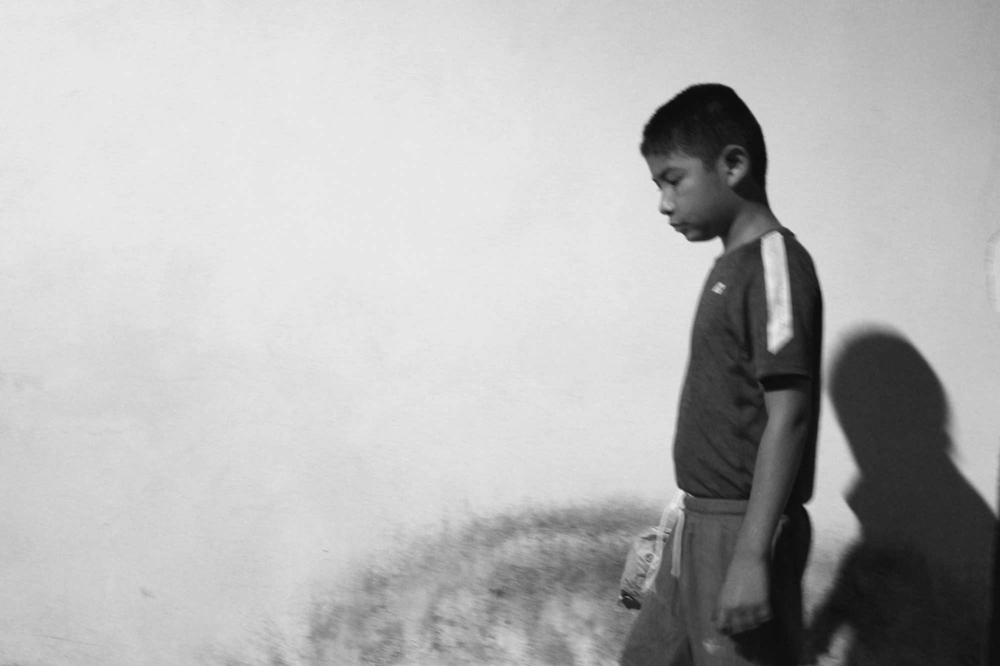

He Wept.
Original Fiction that Bleeds.Got Three Minutes?
Here are some amazing examples of how I write.
Storytelling goes way back. (Photo by author.)
Cross Traffic
Nobody lingers here.
Management assumes no responsibility. (Licensed image.)
A hatchback slams.
The door of a van rolls shut.
Brakes squeal. Horns blare. Two cars nearly collide backing up at once. An obscene gesture. “¡Hijo de puta!” An elderly man drives off afraid.
Exhaust mingles with the stench of rubbish from a barrel that hasn't been emptied and the odor of grease from the fryer at Burger Boy.
Welcome to Lot C.
Empty and bleak at 2 AM.
Mayhem on Saturday afternoon.
“Littering, loitering, skateboarding, ball playing, soliciting, overnight parking PROHIBITED,” says the sign. “Video surveillance in use.” “Management assumes no responsibility.”
A discarded Orange Julius cup bears the imprint of the tire that flattened it.
A half finished box of Karmelkorn sits on the curb.
Nobody lingers here—nobody stands around except to smoke a cigarette on her ten minute break. This is the place to park and lock. The place where couples quarrel, kids squirm and wail, and single moms make sure the car seat is buckled just right.
Want some advice? Remember your row. Don't leave packages in plain sight. Report suspicious activity. Cross traffic does not stop.
Longing for something that turns you around completely? That captivates instead of seduces? That inspires instead of distracts?
This is merchandise outside the box. No fads. No gimmicks. No cards to swipe. No points to redeem. Not even Green Stamps.
Dignity and freedom don't carry stickers that say Made in China when you turn them upside down. Purpose and love can't be found at a “2 for 1 Pre-Clearance Blowout.”
Longing for clarity, insight, something more than hype and hypocrisy? Something meaningful that lasts? Somebody who understands? A way out of the emptiness and loneliness? Or just a way out?
Welcome to Lot C Media.

This is merchandise outside the box. (Licensed image.)
Everything Must Go!
More than just merchandise.

Time is never kind and rarely gentle. (Photo by author.)
Nobody imagined the palace would crumble someday. It had a shelf life, an expiration date.
Just like we do.
Lot C was once a dairy farm, surrounded by fields covered with goldenrod in the spring and unblemished snow in the winter, before the subdivisions sprang up. Nobody remembers that.
Green turned into grey. Asphalt. Curbs. Parking spaces. Guardrails. Overpasses. High tension lines. Tomorrow's community—today. Sprawl was visionary, space age.
One thing's for sure—time is never kind and rarely gentile. What isn't dead is dying. Some blame the new regional mall that opened near the Interstate, others the low income housing. A few mention toxic waste and shrug.
It's hard to believe now, but this place once beckoned, gleamed. We weren't zombies, just innocent. Shopping was about promises, possibilities. The cradle of modern identity. The altar of hopes and dreams. Everyone recalls the Christmas decorations and the crowds. The model train exhibit. Dad browsing the Craftsman tools. Mom in notions. A hand to hold until we were big enough to wander and then to roam. The Food Court. Aladdin's Castle. First dates. Prom dresses. Chess King. The first paycheck. The lure of something—everything—just around the corner.
The clearance sale went on for a month at Woolco before the shelves were empty and the lights went out for good. Ditto for a dozen other chains whose names are still visible as outlines in the stucco and cement even after the signs are gone.
Down a yellow corridor where nobody goes there's an office with a dusty frame hanging on the wall. An aerial photo. "Grand Opening, Labor Day, 1971." Faded clippings from a newspaper decades out of date.
"Air conditioned comfort."
A movie theater with three screens!
A Brunswick bowling alley that was planned but never built.
The Auto Center at Monkey Wards became a flea market with plastic statues of La Virgen and música ranchera. The vast expanse of pavement packed with station wagons and family sedans is now empty except for the weeds growing in the cracks. Grey turning green again. Lot C changed—things always do. We did too, except where it counts the most.
We couldn't see it then. It's too damn obvious now.
None of this was built to last.
None of us will leave a trace.
The cradle of modern identity. The altar of hopes and dreams. (Licensed image.)
Whaddya Say?
It lasts a lifetime.

I don't know if he remembered any of it. (Photo by author.)
There was a little boy whose father took him for a ride one day. The train. The station. The subway. The Chicago “L”. Howard Street. A snack shop on a corner. A hot dog with all the trimmings. An afternoon that lasted a lifetime. Dad's gone of course. I don't know if he remembered any of it. I don't know if I ever told him how much it meant. It's been ages, but the last time I looked, it was still there. The snack shop on the corner. And they still sold hot dogs to little boys. And to the men they have become.
There is a little boy whose dad can't take him for a ride. Not today or any other. Dad didn't survive the gunshot wound to the chest. This little boy lives with his mom and his brother and sister in one room. Mom makes the equivalent of forty dollars a week. As if that wasn't enough, this little boy reads poorly, far below grade level. His aunts and uncles and cousins call him “stupid”. They tell him he'll be the street sweeper someday. He goes around town telling people that.
This other little boy — he hasn't got a chance. Where the hell is Superman when you need him? Turns out he's on a T-shirt in the closet, and that's where he'll stay.
This other little boy needs shoes and clothes and someone to listen when he cries and someone to look up to and someone who wants him around. I'll give him that the best I can. I'll give him something else too.
“See that man? He's called the motorman. He drives the train. Hey! Let's stand up in front so we can look out the window. Whaddya say?”
Where is Superman when you need him? (Photo by author.)